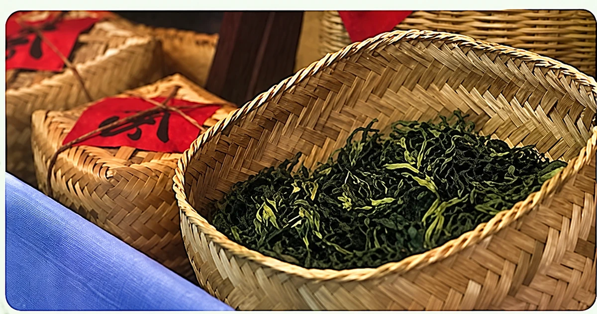

课文 1
周六上午，安妮到茶叶店买茶叶。Sáng thứ Bảy, Annie đến cửa hàng trà mua trà.
分角色朗读对话 · Đọc phân vai đoạn hội thoại (Role-play the dialogue)

课文对话
售货员
您要什么茶？
Chị muốn loại trà nào?
安妮
我先看看。这里茶叶这么多，究竟买哪种好呢？
Tôi xem trước đã. Ở đây nhiều loại trà như vậy, rốt cuộc mua loại nào thì tốt?
售货员
茶叶主要分为红茶、绿茶等，看您喜欢喝哪种。
Trà chủ yếu chia thành trà đen, trà xanh... tùy chị thích uống loại nào.
安妮
我想买一些自己喝，再买些送人。这种绿茶还有吗？
Tôi muốn mua một ít để uống và mua thêm để biếu. Loại trà xanh này còn không?
售货员
抱歉，暂时没有。如果自己喝，可以买这个绿茶，今天满二两送半两，超过半斤再送小礼物；如果送人，可以买个盒子装进去。
Xin lỗi, tạm thời hết. Nếu uống thì có thể mua loại này; hôm nay mua đủ hai lạng tặng nửa lạng, quá nửa cân còn tặng quà nhỏ; nếu biếu thì có thể mua hộp để đựng.
安妮
嗯。那就先买六两这种绿茶吧，再买一个盒子。请帮我分着装，盒子里装半斤，剩下的用纸包一下就行。
Vậy mua trước sáu lạng loại trà xanh này và thêm một hộp. Nhờ chia ra đóng gói, hộp đựng nửa cân, phần còn lại gói giấy là được.
听对话，选择正确答案
（1）安妮想知道：
（2）安妮最后买了：
根据课文内容回答问题
（1）安妮为什么要买茶叶？
Vì sao Annie muốn mua trà?
Vì sao Annie muốn mua trà?
（2）关于买茶叶送人，售货员有什么建议？
根据给出的提示复述课文
安妮到茶叶店买茶叶，售货员问她……。她不知道究竟买……，售货员向她介绍了不同的茶叶。安妮想买一些茶……，再……。但她想买的一种绿茶……。售货员向她介绍说，自己喝的话，可以……，今天……，超过半斤再送……；送人的话，可以买个……。安妮最后买了……，盒子里……，……用纸包起来了。
Annie đến cửa hàng trà mua trà. Nhân viên hỏi cô… Cô không biết rốt cuộc nên mua… nên nhân viên giới thiệu các loại trà khác nhau. Annie muốn mua một ít trà để…, rồi… Nhưng loại trà xanh cô muốn mua lại… Nhân viên giới thiệu rằng nếu tự uống thì có thể…, hôm nay…, mua quá nửa cân còn được tặng…; nếu mua biếu thì có thể mua một… Cuối cùng Annie mua…, trong hộp…, còn… thì gói bằng giấy.